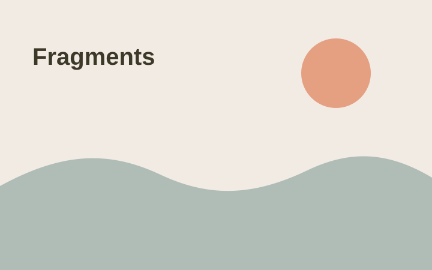
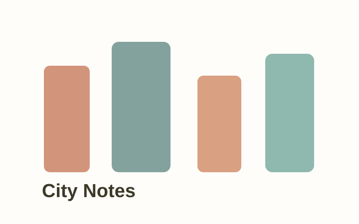

Shenzhen University
Mechanical Design, Manufacturing and Automation (Innovation Class)
2024 - 2028
About
这里会成为我的个人成长主页：不只是列出经历，也记录那些真正让我变成现在这个人的城市、作品、歌和瞬间。
第一版先搭好完整骨架。你之后只需要替换头像、联系方式、真实照片、项目链接和网易云歌单链接，这个站点就会越来越像你本人。
Resume
Mechanical Design, Manufacturing and Automation (Innovation Class)
2024 - 2028
Structural Intern
September 2025 - Present
Mechanical Team Member
September 2024 - September 2025
Timeline
把分散在相册、歌单、项目仓库里的自己收拢起来，做成一个可以持续更新的空间。
从去过的城市、做过的小项目、喜欢的音乐里，慢慢找到自己的表达方式。
一些看似零散的尝试，会在以后连成线。
Map
Playlist
稍等一下，音乐会到这里来。
Projects
项目正在加载。
Fragments

